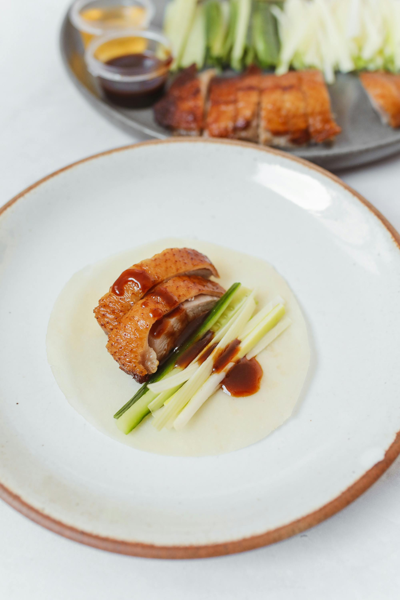
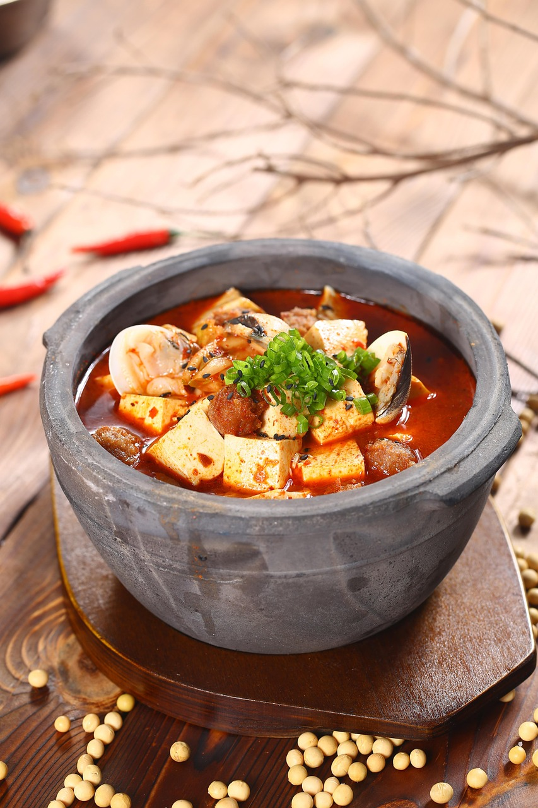
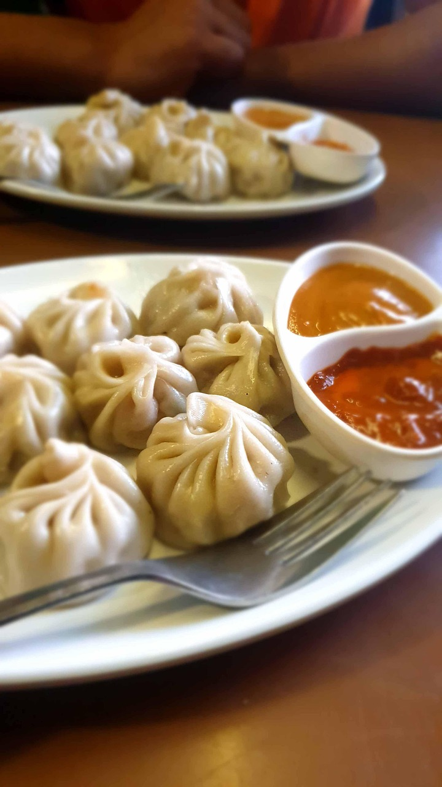
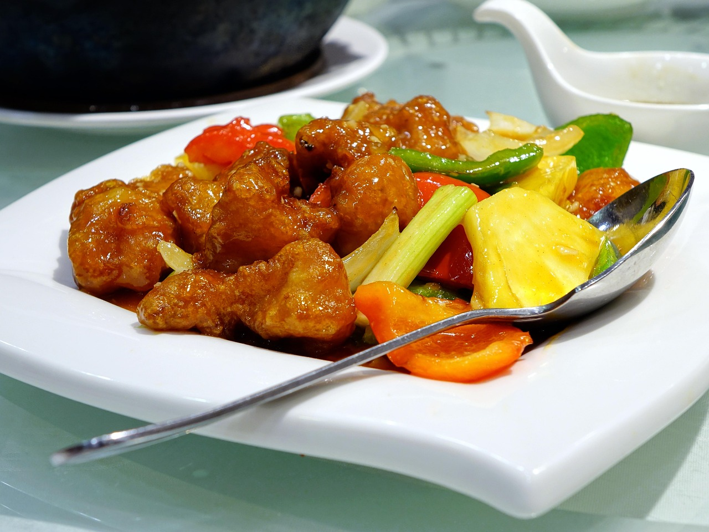
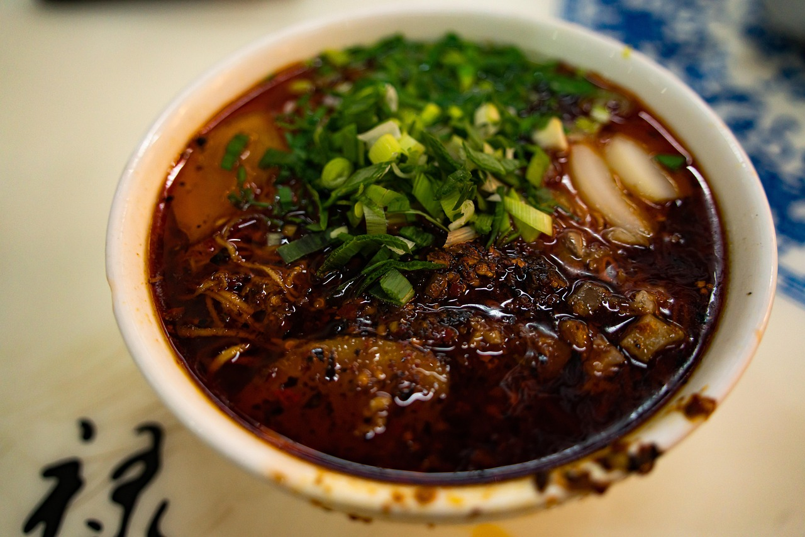

Peking Duck
A famous Beijing dish known for its crispy skin and rich flavor, served with thin pancakes and hoisin sauce.

Mapo Tofu
A spicy Sichuan classic with tofu, minced pork, and a bold chili and Sichuan peppercorn sauce.

Dim Sum
A variety of bite-sized Cantonese delicacies, including shrimp dumplings and BBQ pork buns, enjoyed with tea.

Sweet and Sour Pork
A Cantonese favorite with crispy pork coated in a tangy sweet sauce, served with pineapples and bell peppers.

Kung Pao Chicken
A spicy and flavorful Sichuan dish with stir-fried chicken, peanuts, and dried chili peppers.

Zhajiangmian
A northern Chinese noodle dish topped with a rich, savory soybean paste sauce, minced pork, and fresh vegetables.